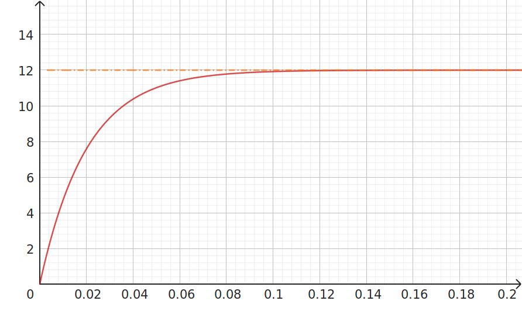
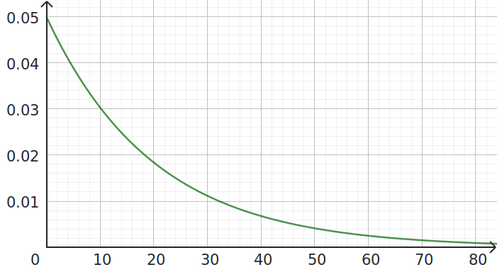

BTS - CCF Blanc - ET - Sujet A
Exercice 1 : Équations différentielles et intégrales (10 points)
Une société fabrique des filtres du premier ordre ;
ces filtres sont constitués d'une inductance L=0,04 henry (notation henry : H) et d'une résistance R=2 ohm (notation ohm : Ω), assemblées en série.
- on applique une tension d'entrée constante ve = 24 volt (V), en régime continu à l'ensemble du montage ;
- on note la tension de sortie vs(t), exprimée en volt, en fonction du temps t, exprimé en seconde (s) aux bornes de la résistance R ;
- on mesure aussi l'intensité i(t), exprimée en ampère (A), en fonction du temps t, en seconde (s) dans le circuit.
Les lois de l'électricité régissant l'évolution du courant i(t) dans le circuit en fonction du temps t donnent la relation suivante :
\[(E_1) : 0{,}04i'(t)+2i(t)=24\]
Cette relation n'est pas à démontrer ; on admet de plus que i(0)=0.
- Déterminer une solution particulière constante de l'équation différentielle \((E_1)\).
- Écrire les solutions de l'équation différentielle homogène \(0,04y'+2y=0\) puis en déduire les solutions générales de l'équation différentielle \((E_1)\).
- En utilisant la condition initiale, démontrer que : \(i(t)=12-12\textrm{e}^{-50t}\)
- On a représenté i(t) sur le graphique suivant, on a tracé l'asymptote à la courbe de i. 
- Graphiquement, tracer la tangente à la courbe de i(t) en t=0 ; vérifier que cette tangente et l'asymptote à la courbe se coupent au point d'abscisse 𝜏=0,02 ;
- hachurer la zone correspondant au régime permanent (t>5𝜏).
- Développer \(\left(12-12\textrm{e}^{-50t}\right)^2\)
- En déduire que \(F(t)=144t+5{,}76\textrm{e}^{-50t}-1{,}44\textrm{e}^{-100t}\) est une primitive de \(\left(i(t)\right)^2\).
- Calculer l'energie E fournie pendant la résistance R durant le régime transitoire :
\(E = \frac{1}{R}\displaystyle\int_{0}^{5𝜏}\,i^2(t)\,\textrm{d}t\)
Exercice 2 : Probabilités (10 points)
Un amplificateur audio (ancien) contient deux composants essentiels à son fonctionnement : un potentiomètre (résistance variable) et un tube à vide (ancètre du transistor).
Partie A : temps de bon fonctionnement du potentiomètre
Le temps de bon fonctionnement (sans entretien), en années, d'un potentiomètre, est une variable aléatoire R positive qui suit, dans des conditions normales d'utilisation, une loi continue dont la densité est la fonction \(f(t)=0{,}05\textrm{e}^{-0{,}05t}\).
- Hachurer, sur les diagrammes suivants, les surfaces dont les aires correspondent aux probabilités suivantes :
- \(P(2<R<10)\);
- Probabilité que le potentiomètre ne tombe pas en panne durant les 20 premières années.
a.b.
En utilisant le calcul intégral ou bien en expliquant la méthode numérique utilisée, calculer une seule (au choix) des deux probabilités énoncées à la question précédente. Arrondir au centième.
Ces potentiomètres sont vendus par lots de 20, et on estime que la probabilité qu'un potentiomètre, pris au hasard dans la production (assez importante pour que cela soit assimilé à un tirage avec remise), soit encrassé en moins de 2 ans est 10%.
- En moyenne, dans un lot, combien de potentiomètres sont encrassés au bout de 2 ans ?
- Donner la loi (ainsi que ses paramètres) à utiliser pour calculer la probabilité P que 5 potentiomètres ou plus, dans un lot pris au hasard, soient encrassés au bout de 2 ans. Donner une valeur de P arrondie au centième (il n'est pas nécessaire de justifier).
Partie B : temps de bon fonctionnement du tube à vide
La durée de vie X, en années, d'un tube à vide suit une loi normale de moyenne µ=8 et d'écart-type 2. On donnera les résultats en pourcentage, arrondis à 1% près.
- Déterminer la probabilité que le tube tombe en panne entre la 4ème et la 12ème année.
- Déterminer la probabilité que le tube tombe en panne entre la 8ème et la 16ème année.
Partie C : interactions
On étudie un amplificateur en fonctionnement intensif depuis deux ans ;
on admet que la probabilité que le tube V fonctionne est de 0,98 ; dans ce cas, la probabilité que le potentiomètre R fonctionne est de 0,96. Lorsque le tube ne fonctionne pas, la probabilité que le potentiomètre ne fonctionne pas est de 0,1.
Arrondir les calculs au millième.
- Représenter cette situation par un arbre de probabilités.
- Calculer la probabilité qu'au moins un des deux éléments V ou R ne fonctionne pas.
- Calculer la probabilité que V ne fonctionne pas sachant que R fonctionne
BTS - CCF Blanc - ET - Sujet B
Exercice 1 : Équations différentielles et intégrales (10 points)
Une société fabrique des filtres du premier ordre ;
ces filtres sont constitués d'une inductance L=0,02 henry (notation henry : H) et d'une résistance R=1 ohm (notation ohm : Ω), assemblées en série.
- on applique une tension d'entrée constante ve = 12 volt (V), en régime continu à l'ensemble du montage ;
- on note la tension de sortie vs(t), exprimée en volt, en fonction du temps t, exprimé en seconde (s) aux bornes de la résistance R ;
- on mesure aussi l'intensité i(t), exprimée en ampère (A), en fonction du temps t, en seconde (s) dans le circuit.
Les lois de l'électricité régissant l'évolution du courant i(t) dans le circuit en fonction du temps t donnent la relation suivante :
\[(E_1) : 0{,}02i'(t)+i(t)=12\]
Cette relation n'est pas à démontrer ; on admet de plus que i(0)=0.
- Déterminer une solution particulière constante de l'équation différentielle \((E_1)\).
- Écrire les solutions de l'équation différentielle homogène \(0,02y'+y=0\) puis en déduire les solutions générales de l'équation différentielle \((E_1)\).
- En utilisant la condition initiale, démontrer que : \(i(t)=12-12\textrm{e}^{-50t}\)
- On a représenté i(t) sur le graphique suivant, on a tracé l'asymptote à la courbe de i.
- Graphiquement, tracer la tangente à la courbe de i(t) en t=0 ; vérifier que cette tangente et l'asymptote à la courbe se coupent au point d'abscisse 𝜏=0,02 ;
- hachurer la zone correspondant au régime permanent (t>5𝜏).
- Développer \(\left(12-12\textrm{e}^{-50t}\right)^2\)
- En déduire que \(F(t)=144t+5{,}76\textrm{e}^{-50t}-1{,}44\textrm{e}^{-100t}\) est une primitive de \(\left(i(t)\right)^2\).
- Calculer l'energie E fournie pendant la résistance R durant le régime transitoire :
\(E = \frac{1}{R}\displaystyle\int_{0}^{5𝜏}\,i^2(t)\,\textrm{d}t\)
Exercice 2 : Probabilités (10 points)
Un amplificateur audio (ancien) contient deux composants essentiels à son fonctionnement : un potentiomètre (résistance variable) et un tube à vide (ancètre du transistor).
Partie A : temps de bon fonctionnement du potentiomètre
Le temps de bon fonctionnement (sans entretien), en années, d'un potentiomètre, est une variable aléatoire R positive qui suit, dans des conditions normales d'utilisation, une loi continue dont la densité est la fonction \(f(t)=0{,}05\textrm{e}^{-0{,}05t}\).
- Hachurer, sur les diagrammes suivants, les surfaces dont les aires correspondent aux probabilités suivantes :
- \(P(5<R<35)\);
- Probabilité que le potentiomètre ne tombe pas en panne durant les 10 premières années.
a.b.
En utilisant le calcul intégral ou bien en expliquant la méthode numérique utilisée, calculer une seule (au choix) des deux probabilités énoncées à la question précédente. Arrondir au centième.
Ces potentiomètres sont vendus par lots de 40, et on estime que la probabilité qu'un potentiomètre, pris au hasard dans la production (assez importante pour que cela soit assimilé à un tirage avec remise), soit encrassé en moins de 2 ans est 10%.
- En moyenne, dans un lot, combien de potentiomètres sont encrassés au bout de 2 ans ?
- Donner la loi (ainsi que ses paramètres) à utiliser pour calculer la probabilité P que 5 potentiomètres ou plus, dans un lot pris au hasard, soient encrassés au bout de 2 ans. Donner une valeur de P arrondie au centième (il n'est pas nécessaire de justifier).
Partie B : temps de bon fonctionnement du tube à vide
La durée de vie X, en années, d'un tube à vide suit une loi normale de moyenne µ=10 et d'écart-type 2. On donnera les résultats en pourcentage, arrondis à 1% près.
- Déterminer la probabilité que le tube tombe en panne entre la 4ème et la 16ème année.
- Déterminer la probabilité que le tube tombe en panne entre la 8ème et la 10ème année.
Partie C : interactions
On étudie un amplificateur en fonctionnement intensif depuis deux ans ;
on admet que la probabilité que le tube V fonctionne est de 0,95 ; dans ce cas, la probabilité que le potentiomètre R fonctionne est de 0,9. Lorsque le tube ne fonctionne pas, la probabilité que le potentiomètre ne fonctionne pas est de 0,2.
Arrondir les calculs au millième.
- Représenter cette situation par un arbre de probabilités.
- Calculer la probabilité qu'au moins un des deux éléments V ou R ne fonctionne pas.
- Calculer la probabilité que V fonctionne sachant que R ne fonctionne pas.